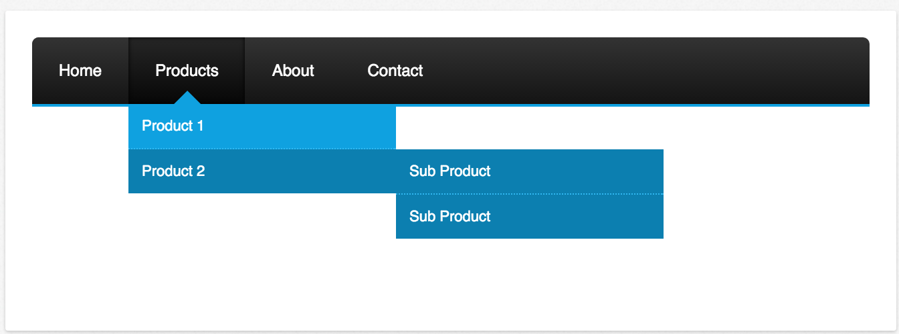
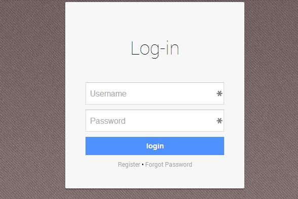
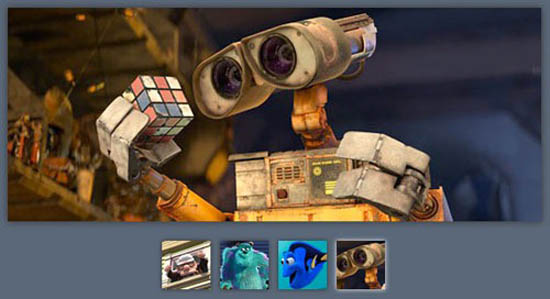
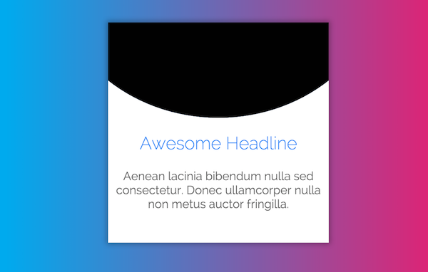
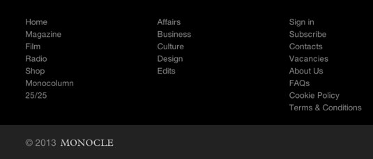

Hello Everyone. I glad to be in this class I would like to talk about myself. My hobbies are video games, and hanging with my friends. With my Xbox One I play Halo 5 and ESO (elder scrolls online). I'm currently working a full time job.
Component Library

1: Drop-down menu
What I Hope To Practice/Learn?
In this class I hope that I will learn how to use the drop down menu correct and fast.
How This Relates To What I Have/Will Learn In WDD.
With this class I had founded out, what I was looking for and more from the correct HTML and CSS to go with it.
How I Build This Component
...

2: Login
What I Hope To Practice/Learn?
A section the tells what is going on with you're website. I need to know work on making it clean/ flowing with the page.
How This Relates To What I Have/Will Learn In WDD.
I think in this class I can reach my goal on this topic.
How I Build This Component
...

3: Photo Slideshow
What I Hope To Practice/Learn?
I never made a page like this. My goal is to hover over the image ans something pops up.
How This Relates To What I Have/Will Learn In WDD.
...
How I Build This Component
...

4: Background CTA
What I Hope To Practice/Learn?
I want to know how to make a slideshow for my background if a button on it.
How This Relates To What I Have/Will Learn In WDD.
From this class its like the same as the explain website or component.
How I Build This Component
...

5: Footer
What I Hope To Practice/Learn?
In this class I plan on working on the the html code of the footer tag and the style with the css.
How This Relates To What I Have/Will Learn In WDD.
I plan on doing my research on the topic. Hopefully study on tricks and tips I finded in the process.